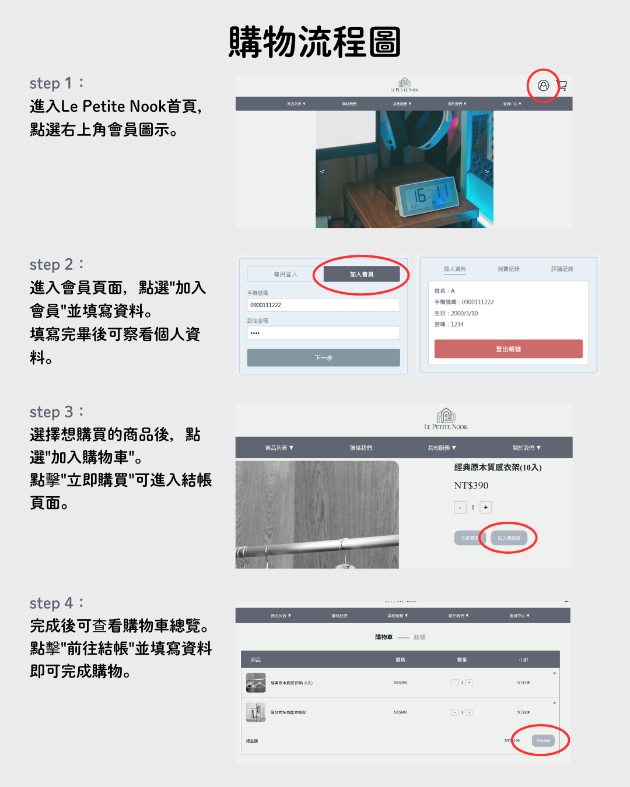

購物流程

配送方式
歡迎來到Le Petite Nook！為了讓您訂購的商品能完好無損送達，我們提供了以下完整的配送管道與服務說明。
配送管道與運費計算
| 配送方式 | 運費 | 運送天數 |
| 一般宅配 | 免運費 | 2-4個工作天 |
| 現場自取 | 免運費 | 當天即可取貨 |
常見問題
親愛的顧客您好，這裡收集了大家最常遇到的商品選購與訂單問題。如果下方找不到您的解答，歡迎點擊頁尾資訊與我們聯繫。
日常清潔只需要使用微濕的軟布順著木紋擦拭，再用乾布擦乾即可。
下單後會在2-4個工作天內由專人致電與您預約方便的配送時間。若是手工製作商品，則需要8-10個工作天的製作期，製作完成後會第一時間安排配送。
Le Petite Nook 目前不提供線上退換貨申請，需連繫客服安排到府取貨。